ColorMod:
Recoloring 3D Printed Objects using Photochromic Inks.
With recent advances in 3D printing, objects can now be fabricated in full-color. However, once an object is
fabricated, the color is permanent and cannot be changed again: every change requires printing a new version
leading to additional printing time and material usage.
To avoid reprinting objects, researchers suggested to digitally project the desired color onto the object.
However, the color disappears once the projector is switched off or the object is removed from the setup.
Recently, researchers have started to explore a different approach: By using photochromic materials
that can switch their appearance from transparent to colored when exposed to light of a certain wavelength,
the color of existing objects can be changed without the need to re-fabricate it.
The color remains even when the object is removed from under the light source.
This process is fully reversible, thus allowing users to recolor the object as many times as they want.
So far, these systems have been limited to single color changes, i.e. changes from transparent to colored.
In this paper, we present ColorMod, a method to extend this approach to multi-color changes (e.g., red-to-yellow).
As shown in Figure 1, the key idea of ColorMod is to 3D print a dense multi-color pattern with one color per voxel
across the entire surface of the object.
When recoloring the object, ColorMod locally activates only the voxels with the desired color and turns all other voxels off.
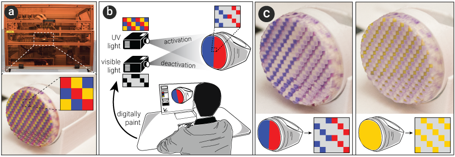
Figure 1:
ColorMod is a method that allows users to recolor objects even after fabrication.
To accomplish this, ColorMod uses
(a) 3D printing of photochromic inks in a dense multi-color pattern.
(b) When users apply a specific color texture using ColorMod’s user interface,
only the voxels with the matching color are activated.
(c) The same object recolored multiple times.
Background on Photochromic Materials
To provide the necessary background knowledge for the technical part of the paper,
we briefly describe different properties of photochromic materials:
Color of Transition State:
Most photochromic materials change from transparent to colored upon activation with a light source—however,
photochromic materials for reverse conditions also exists, where the activated state is transpar-ent and the deactivated state is colored.
Fading Out vs Persisting:
Most photochromic materials transition back to the deactivated state once removed from the light source
(known as
T-type photochromics). But for a certain class of photochromics known as
P-type photochromics), the color persists,
i.e. the activated state continues even after the material has been removed from the light source.
Activation/Deactivation: Photochromics are typically activated by a
UV light source (wavelength 250nm to 390nm).
Deactivation typically requires a
visible light source (390nm to 790nm). There is no single activation wavelength.
Activation occurs rather over a spectrum with one wavelength supplying the peak energy (see Figure 2). In practice,
this means that activation occurs at different wavelengths rather than only at its peak, but activation may take longer.
Activation also occurs at a much higher absorbance rate than deactivation, thus activation takes less time.
Saturation of colors: The saturation of the color is deter-mined by the amount of energy induced by the activation light source
(i.e., the UV light). The more energy induced, more saturated the color becomes.
The properties described above also apply to other color-changing materials: While photochromics are activated by light,
there are also color-changing materials that are acti-vated by temperature (thermo-chromic),
electricity (electrochromic), and pressure (piezochromic)—the only difference being the source that induces the color-change.
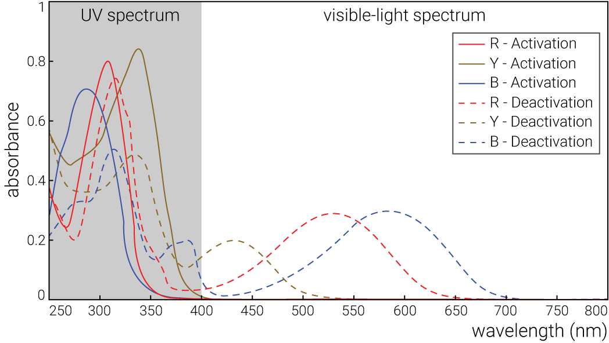
Figure 2:
Activation/Deactivation spectrum for the photochromic dyes we used.
COLORMOD – RECOLORING 3D PRINTED OBJECTS
The main contribution of ColorMod is a method to create 3D objects that allow for multi-color changes in their appearance even after
fabrication. It works by placing differently colored photochromic materials in a dense multi-color voxel pattern across the entire
surface of the object (see Figure 3). During recoloring, only the voxels with the desired color are activated; all other voxels
remain deactivated and transparent. While the resolution of our 3D printer and projector/camera setup is limited resulting in the
color pattern to appear coarse, future advances in hardware will likely raise the resolution by several orders of magnitude.
Because painting such a dense multi-color pattern onto the object’s surface by hand is not feasible,
we developed a custom 3D printable material based on photochromic dyes (see section ‘Material’). Our material is made from
a p-type photochromic dye; thus color-changes persist even when the object is removed from under the light source.
In the following section, we describe the hardware/software setup behind ColorMod and provide details on the material mixing procedure.
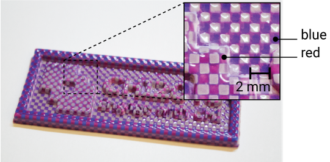
Figure 3:
A dense pattern of different photochromic voxels allows for multi-color changes in the same area.
System Setup
Our hardware setup consists of three components:
(1) For
activation, we use a UV light (Luminus Devices Inc. CBM-40-UV, ~355nm, 4W)
that we automatically turn on/off using a digital controller (PhatLight LED Develop Kits).
(2) For
deactivation, we use a regular visible-light projector (CASIO XJ-A140, XGA 1024x768 pixels, 2500 ANSI lumens).
(3) For 360° projection on the object, we use a rotat-ing platform that is controlled via a relay switch (
Adafruit Industries PowerSwitch Tail II) connected to an Arduino.
In addition to these three main components, we use a regular RGB camera (PointGrey Chameleon3 CM3-U3-13S2C-CS, 1024x768 pixels)
to calibrate the projector position with the rotating platform. The camera can be removed once the system is calibrated.
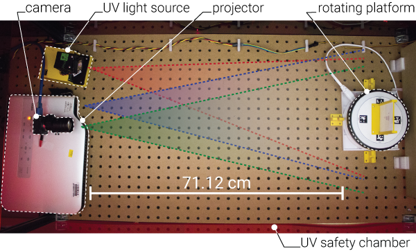
Figure 4:
The ColorMod hardware setup.
Figure 4 illustrates how the components are positioned with respect to each other.
To ensure the image is in focus, the visible-light projector is placed at a distance that matches its focal length with the
rotating platform. In our case, the distance is 71.12cm. The UV light is placed as close as possible to the object to maximize
the activation energy (but far enough to not interfere with the visible light projector). Finally, the camera is placed at a
distance that ensures it can see the image projected onto the object. All components are placed on the same axis for easier calibration.
Mechanism for Activating and Deactivating Colors
To change the color of an object, we proceed as follows:
(1) First, we use the UV light to globally activate all voxels thereby flipping all voxels from transparent to colored
(with our UV light source, this takes ca. 68s).
(2) In the second step, we use the visible light projector
to selectively deactivate voxels whose color are not part of the final appearance (takes ca. 253s (~ 4 minutes)).
We rotate the object with the rotating platform to reach voxels on all the sides of the object.
We rotate in 90 degree increments: four times for activating all colors and four times for selectively deactivating colors.
Thus, activation takes 5 minutes in total (4 x 68s per side) and deactivation takes ~ 17 minutes in total
(4 x 253s per side). Rotating the object takes 16s per side (two times 3 rotation = 6 x 16s = 96s).
Adding this up, a complete recoloring process involving all steps takes about 23 minutes.
As previously discussed in section ‘Background’, this pro-cess can be further sped up in several ways by:
(1)
Using more powerful UV light, i.e. a light source with more lumen.
(2)
Placing the light source closer to the object to maximize light intensity:
Using a visible light projector with a shorter focal length would allow us to place both the projector
and the UV light closer, thus further speeding up the activation/deactivation process.
(3)
Using a light source that perfectly matches the target wavelength: We use a single activation light source (~355nm);
however, as illustrated in Figure 2, different photochromic colors have different peak activation wavelengths, in our case 310nm, 270nm,
and 350nm for red, blue, and yellow.
A faster charging setup would use multiple UV lights with individually matching wavelengths.
The same holds true for the deactivation light source: We only use one deactivation light source,
i.e. visible light (390nm to 790nm); however, deactivation would be faster by having a light source that matches the wavelength
required for the specific photochromics.
(4)
Using a UV projector rather than a UV light source: A UV projector would allow us to selectively activate voxels;
deactivation with visible light would thus not be required during every recoloring step but only to deactivate voxels
that are no longer required. However, UV projectors for 295-365nm are expensive
(ca. $4,000 - $8,000, e.g. model WINTECH PRO6500 and VISITECH LE4960H-UV) whereas a single UV light only costs around $150.
This makes our setup suitable for consumers and easy to replicate by HCI researchers.
USER INTERFACE
ColorMod offers a user interface implemented as a plug-in for the 3D editor Blender.
It supports the user with both steps of the ColorMod processing pipeline (Figure 5):
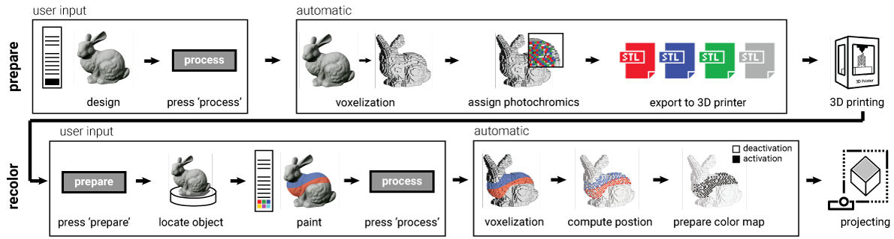
Figure 5:
Interaction pipeline: preparing the 3D model for fabrication, then recoloring the model.
(1) Preparing the 3D model for 3D printing by converting the model into the corresponding voxel-material representation.
This only needs to be done once before the model is printed.
(2) Re-coloring the object after it has been printed. Since this is a reversible process,
users can repeat the process as often as they like.
#1 Converting the 3D Model for Fabrication
Users start by either creating a new 3D model or by loading a 3D model from a database such as
Thingiverse.
To convert the 3D model for the photochromic printing process, users first select the desired colors from the menu (e.g., red, blue, and yellow), then hit the ‘process’ button in ColorF-ab’s user interface. As can be seen in Figure 6, our software responds by converting the model accordingly.
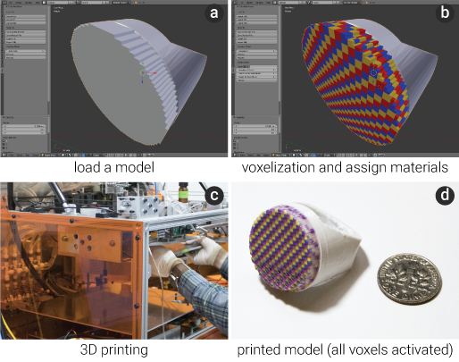
Figure 6:
(a, b) Converting a 3D model into the ColorMod voxel-color representation and (c,d) 3D printing it.
The conversion consists of
(a) splitting the model into individual voxels,
(b) assigning a photochromic color to each voxel, and
(c) generating a set of files for 3D printing—one file for each photochromic printing color, and one for the infill of the object
(both are in .stl file format). Users can then load the .stl files into the 3D printer and print the ob-ject.
(d) The object comes out fully colored from the 3D printer due to the internal UV light used by 3D printer for curing the materials during printing.
#2 Coloring the Printed Object
After the object is fabricated, users can change its color as often as they like.
Figure 7 shows how the user changes the printed ring from one color pattern to another.
(a) The user starts by placing the object onto the rotating platform of the projector-camera setup.
The object is held in the center of the platform through a small magnet.
The user then clicks the ‘prepare’ button in ColorMod’s user interface.
(b) Once ColorMod located the object on the rotating plat-form, it displays the 3D model and the painting tool in the 3D editor.
Users can take the brush tool and choose a color from the color palette to draw the desired appearance onto the 3D model
(the color palette is constrained to only those photochromic colors that the object contains).
(c) When the user hits the ‘process’ button, ColorMod first computes which voxels need to be activated and then
(d) executes the desired pattern by activating all voxels first and, then
(e) selectively deactivating voxels.
(f) On completion, users can take the object from the platform and use it with its new appearance.
As illustrated in Figure 8, users can repeat the process of recoloring the object as many times as they like.
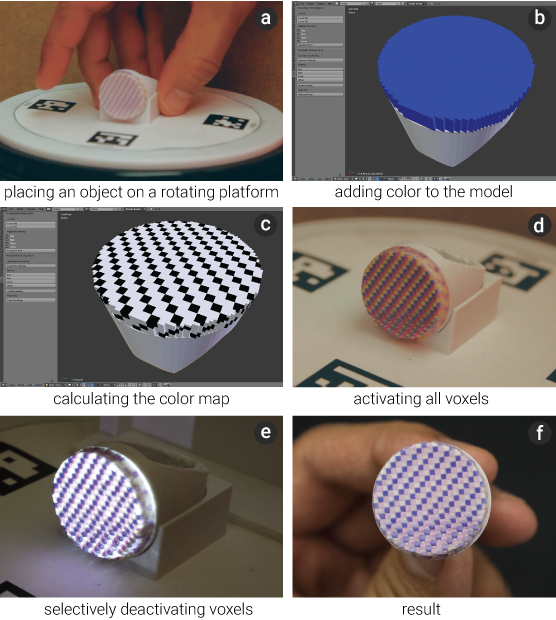
Figure 7:
Recoloring an object.
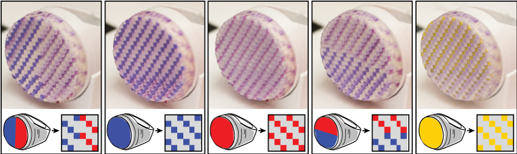
Figure 8:
The same object recolored multiple times.
Material for 3D Printing Photochromics
To enable the process described above, we developed our own photochromic ink suitable for 3D inkjet printing (Figure 9).
While photochromic plastic filaments for extrusion based 3D printers exist (e.g., MakerBot Photochromic PLA),
these types of printers are not suitable for printing full-color patterns in which each voxel has a different color.
For our ink development, we focused on 3D inkjet printing with polyjet 3D printers that mix the color binder directly into
the jet-able base ink.
A different formula will be required for powder- or paper-based inkjet 3D printers.
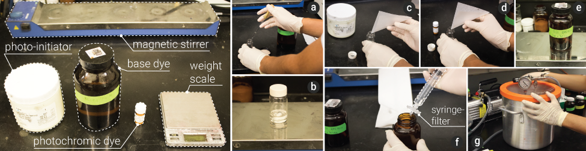
Figure 9:
Ink mixing procedure.
(a) Mixing base,
(b) stirring base,
(c) adding photo-initiator,
(d) adding photochromic dye,
(e) stirring photochromic ink, (f) filtering, and (g) degassing.
Materials and Amounts
Our custom photochromic 3D printable ink consists of three main components:
(1) a
base dye that can also be used for 2D inkjet printing,
(2) a
photo-initiator that causes the base dye to harden during 3D printing (using the 3D printers internal
UV light for photo-polymerization),
(3) the
photochromic dyes to induce color into the base dye.
We purchased the materials from the following vendors:
(1)
base ink: consists of three materials bought from Rahn USA Corp: materials Genomer 2252/G, Genomer1117, and Miramer300,
ca. $268 for 50g.
(2)
photo-initiator: from IGM Resins Inc., material: Irgacure 819, ca. $250 for 50g.
(3)
photochromic dyes: from Yamada Chemicals, colors: blue (DAE-0001, 270nm), red (DAE-0004, 310nm), and yellow (DAE-0068, 350nm),
ca. $95 per gram per color.
Although described as red and blue, the colors from Yamada Chemicals appear to be closer to the colors magenta and purple (see Figure 3).
Required Equipment
For creating our material, we used the following equipment:
(1) a magnetic stir bar and stir plate for mixing the different components (ThermoFisher Scientific model no. SP88857100),
(2) a degasser for removing air bubbles from the mix (Yescom 5 Gallon Stainless Steel Vacuum Chamber Kit),
(3) a syringe filter with resolution of at least 1/10th of the print head nozzle size for removing impurities that can clog the printhead
(we used a 1 µm filter since our print head diameter is 30 µm, FisherScientific model no. 09-801C).
Mixing Procedure
Figure 9 shows the ink mixing procedure.
We prepared the base dye for 100ml by mixing Genomer2252/G (32g), Ge-nomer1117 (59g) and Miramer300 (9g)
for one hour on the stir plate at 600rpm. We then added the photo-initiator to the base dye by mixing 2g of Irgacure 819
(1g for every 50g of base dye).
We then added the photochromic dye by mixing 0.1g of either DAE-0001, DAE-0004, or DAE-0068 (0.1g for every 100g).
The entire solution was then mixed again on the stir plate at 600rpm for one hour to dissolve the particles of the dyes in the base ink.
We then passed it through the syringe filter to make sure that no large particles remained.
Finally, we degassed the ink to remove air bubbles that were generated from the filtering process.
Material Usage and Storage
100g of the resulting photochromic ink can produce ~91 cm3 of 3D printed material.
The material can be stored for several months before the color decays.
The duration depends on the storage conditions, i.e., keeping it in a dark environment extends the duration.
Additional Considerations
Particle size: Most dyes contain large particles that tend to clog the inkjet printing nozzles.
Reducing the particle size typically includes addition of surfactants. This addition of surfactants,
however, proves problematic to the photo-chromic properties, as it acts as a coating to the dye.
This may not be optimal when trying to expose the dye to UV or visible light. After testing different dyes,
we found that the dyes from Yamada Chemicals are soluble in our base dye,
i.e. particles are dissolved in the ink instead of dispersed; thus, we use them for all objects in the paper.
Viscosity and surface tension: An ink’s printability depends on its viscosity and surface tension.
If the material is too viscous, it cannot be jetted. However, if the material is too thin,
it will not have stable jetting. The viscosity needs to be at a range of 10-15cp and the surface tension needs to be
around 20-25 mN/m for stable jetting. The base dye was formulated to be within this range. Adding photochromic dyes (0.1g to 100g of base ink)
showed little to no change to the ink’s viscosity and surface tension, thus we were able to use it without further adjustment.
Color Spectrum
While only a few photochromic colors can be commercially purchased,
we found several ways to increase the color spectrum achievable with the colors we were able to buy.
Saturation of Colors
We can vary the saturation of a color in three ways:
(1) During
ink preparation, we can add more photochromic dye to the base ink, which leads to a stronger color and faster reaction time.
However, this also results in additional particles in the solution, which could potentially clog the printer nozzle.
(2) During
activation, we can stop supplying energy half way through, which results in a less saturated color,
e.g. a light blue rather than a dark blue. (3) During deactivation, we can only partially discharge a voxel. Figure 10 illustrates this:
the top voxels were discharged for a longer time than the voxels at the bottom, leading to a gradient saturation from top to bottom.
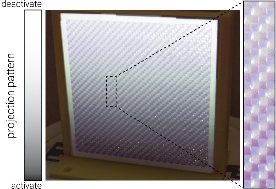
Figure 10:
Varying saturation: the voxels at the top are discharged longer, leading to a less saturated color.
Mixing Photochromic Dyes
Interestingly, we found that by mixing two photochromic dyes,
we can achieve an intermediate photochromic color just as one would expect from mixing two regular inks.
For instance, we created a green photochromic ink (Figure 11)
by mixing blue and yellow dyes in different amounts during ink preparation (e.g., 1:2 of DAE0001 and DAE0068).
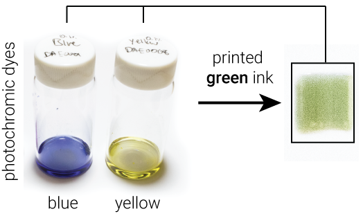
Figure 11:
Green material produced from blue and yellow.
Perceptual Illusion of Additional Colors
When multiple colors are printed in a dense pattern, research has shown that humans perceive a gradient color.
While our current system resolution is too low for this perceptual illusion, a future version could increase
the range of colors by visually blending them,
e.g. blue and red activated close to each other could lead to the perception of a purple voxel.
Implementation
In this section, we describe the processing pipeline behind our system. An overview of the whole process is shown in Figure 5.
Both 3D model conversion and the painting inter-face are implemented in Python and as a
plug-in to the 3D editor Blender.
We use OpenCV as part of the projector-camera calibration.
3D Printing: Split 3D Model into Multi-Color Voxels
We start by converting the 3D model into a high-resolution geometric voxel representations using the algorithm.
In short, this algorithm samples, low-pass filters the model into a multi-resolution volume and applies marching cubes
for extracting a polygonal mesh and to simplify the voxels.
For our setup, the geometric voxel size is approx. 0.05mm x 0.05mm x 0.05mm.
Since only the outer shell of the model is printed with photochromic material and the inside is printed with a regular white material,
we need to determine which voxels lay on the outside and which on the inside before assigning mate-rials.
A voxel lays on the inside if it has six adjacent voxels
(four adjacent voxels on the same layer and one adjacent voxel on each the upper and lower layer).
If a voxel has less than six adjacent voxels,
it lays on the outside. Figure 12a shows the process of counting adjacent voxels.
Since we print multiple shells to achieve a saturated color (see our paper, for more detail),
we repeat the process until the number of shells equals the desired shell thickness (Figure 12b).
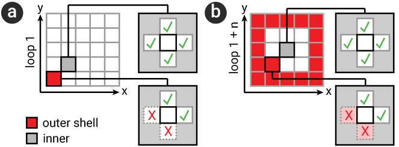
Figure 12:
Determining which voxels lay on the outside and which on the inside.
Only outside voxels have a photochromic color assigned, inside voxels are of regular white material.
A color voxel has one of the colors the user selected from the user interface, in the case of the ring in
Figure 8 the col-ors are red, blue, and yellow. We start at the bottom layer and label the voxel as R, B, and Y, respectively (Figure 13a).
We then repeat the process along the circumference.
Moving up, we offset the colors. Since we group 20 geometric voxels into one color voxel, the offset appears every 20 voxels (Figure 13b).
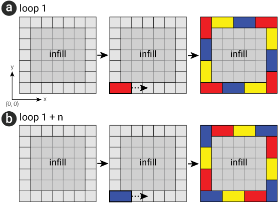
Figure 13:
Grouping of geometric voxels to color voxels.
After we assigned a color to each geometric voxel, we ex-port one 3D printable .stl file per color,
resulting in three .stl files for the photochromic materials and one .stl file for the white infill material.
Each .stl file is then assigned a printing material in the 3D printing software.
3D Painting: Color Map Preparation for Projection
After the user places the object on the platform and hits the
prepare button,
our system loads the projector calibration parameters that was measured in advance into
Blender’s virtual camera.
The software then prepares the projection viewport and runs the 3D painting tool.
When the user finishes painting the 3D model and hits the ‘process’ button,
we match the painted voxels to the photochromic color voxels previously assigned to the fabricat-ed object.
If in the painted 3D model a color voxel has the same color as in the printed 3D model, we mark it as black.
Since black results in no deactivating light from the visible light projector, the corresponding physical voxel will not be deactivated.
Otherwise, we mark it as white, i.e. it will be deactivated. Figure 14shows the result of this process:
a black/white model (a color map) that we use in the subsequent deactivation stage (see Figure 7c for a 3D version).
After identifying which voxels need to be deactivated, our software runs a small Arduino script that rotates the plat-form in 90 degree increments.
When a specific angle is reached,
the matching colormap transfers the digital design onto the physical object by deactivating all voxels of the undesired color
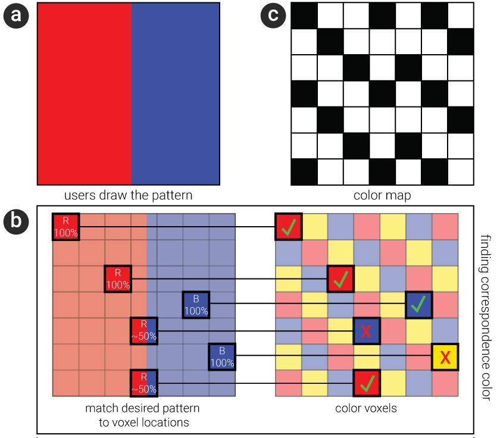
Figure 14:
Process to determine correspondence color between users’ desired pattern and color map for projection.
Calibration
In order to calibrate the projector-camera system, we first have to obtain the intrinsic and extrinsic parameters of
both the projector and the camera.
For this, we use Zhang’s method that uses a checkerboard.
To obtain the projection matrix, we place a 3D object with known geometry onto the rotating platform. We then calculate the
corresponding points between specific 3D positions from the object and the 2D position in the camera image.
The corresponding points then translate into the projection matrix. We compute the projection matrix once (in advance)
and then load it into Blender’s software when the user starts the painting process, i.e. hits the ‘prepare’ button
Contribution, Benefits, Limitations
With ColorMod, we contribute a method to recolor 3D printed objects even after fabrication.
We contribute the idea of locally activating and deactivating voxels of differ-ent colors,
and a hardware/software system that implements this idea. We also contribute
our own material formula for a 3D printable photochromic ink, which enables fabrication of the color pattern required for our approach.
The key benefit of our method is that it does not require the user to reprint objects for every desired change,
which saves time, reduces waste and does not require additional material.
On the flipside, our approach is also subject to several limitations.
Occlusion: Since we use light to activate/deactivate voxels,
we can only change the color in the areas of an object that can be reached by the projector and UV light source
(i.e. no cavities and undercuts).
Color Decay: While the material we use has a persistent color change, color still
slowly disappears over the course of several weeks (see our experiment in section ‘Evaluation’). The reason for this
is that the deactivation wavelength is also contained in the visible light in our everyday surroundings.
Resolution: The resolution of the 3D printer is too low to be practical at this point (1mm voxel size); but research indicates that
the 3D printing resolution is increasing every year since 2006.
Activation/Deactivation Time: Our current setup takes 25 minutes
for a recoloring process. However, this can be sped up using some of the improvements described earlier, such as using a more powerful
light source.
Printing time: Our inkjet 3D printer requires
a separate pass for every printing material on a layer, thus overall printing speed is slow. Printing the ring in Figure 8 took ca. 8 hours.
Application Scenarios
We envision the following application scenarios for our approach of recoloring objects:
Adaptable Fashion & Accessories
Accessories, such as earrings, bracelets, necklaces, and smart watches tend to be worn on an everyday basis,
making it difficult to pick a color that matches all outfits.
As shown in Figure 15, with ColorMod such accessories can be recolored depending on what the user is wearing.
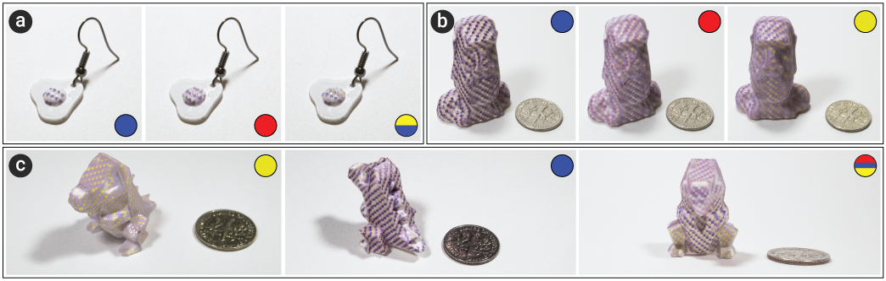
Figure 15:
Sample 3D printed objects with different desired pattern: (a) ear ring and (b-c) sample sculptures.
Fast Product Design Iteration
In product design, designers often present the physical artifact to the client in order to allow the client to better judge
the look and feel. Even small changes, such as changing the visual appearance of the product require hours of
refabrication and often an additional meeting.
With ColorMod, product designers can adjust the appearance of the product while still in the meeting.
Post-Customization for In-Store Products
While low-cost 3D printing is still too slow to fabricate customized objects in store, we envision that in a first step,
stores will pre-stock mass-manufactured products but let customers select the colors on demand based on their own preferences.
Conclusion
We presented ColorMod, a method for changing the color of a 3D-printed object even after fabrication.
We demonstrated how by printing different photochromic colors in a dense multi-color voxel pattern across an object’s surface,
we can recolor the object by selectively turning specific color voxels on and off. We explained the different factors influencing
how precisely and how fast
we can activate individual voxels and also provided a description of the material formula for our custom 3D printable photochromic ink.
For future work, we plan to make the setup more compact to allow for mobile use. Our long-term goal is to allow users to recolor objects
while on the go using a smart phone with an integrated micro-projector and UV light.
Acknowlegdements
We would like to thank our colleagues from the
Computational Fabrication Group
at MIT CSAIL for the hardware support.
We would also like to thank
Dishita Girish Turakhia for her help with the writing of this paper.
This project is supported by the JSPS KAKENHI grant number
16J00049.